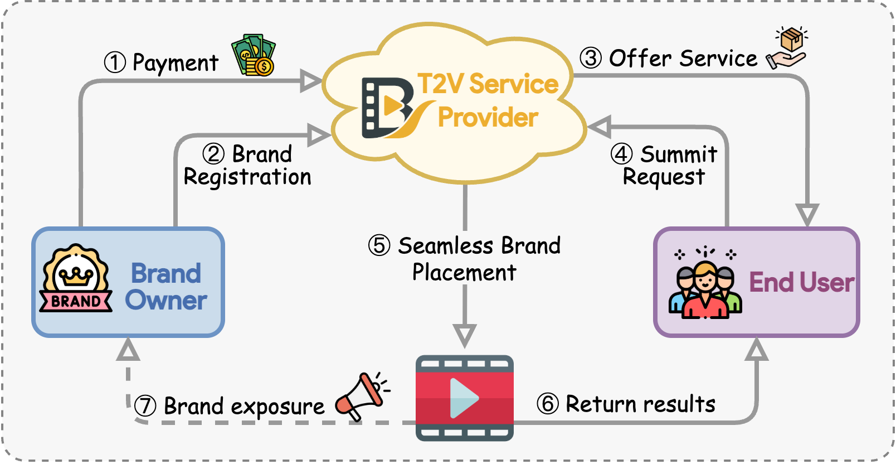
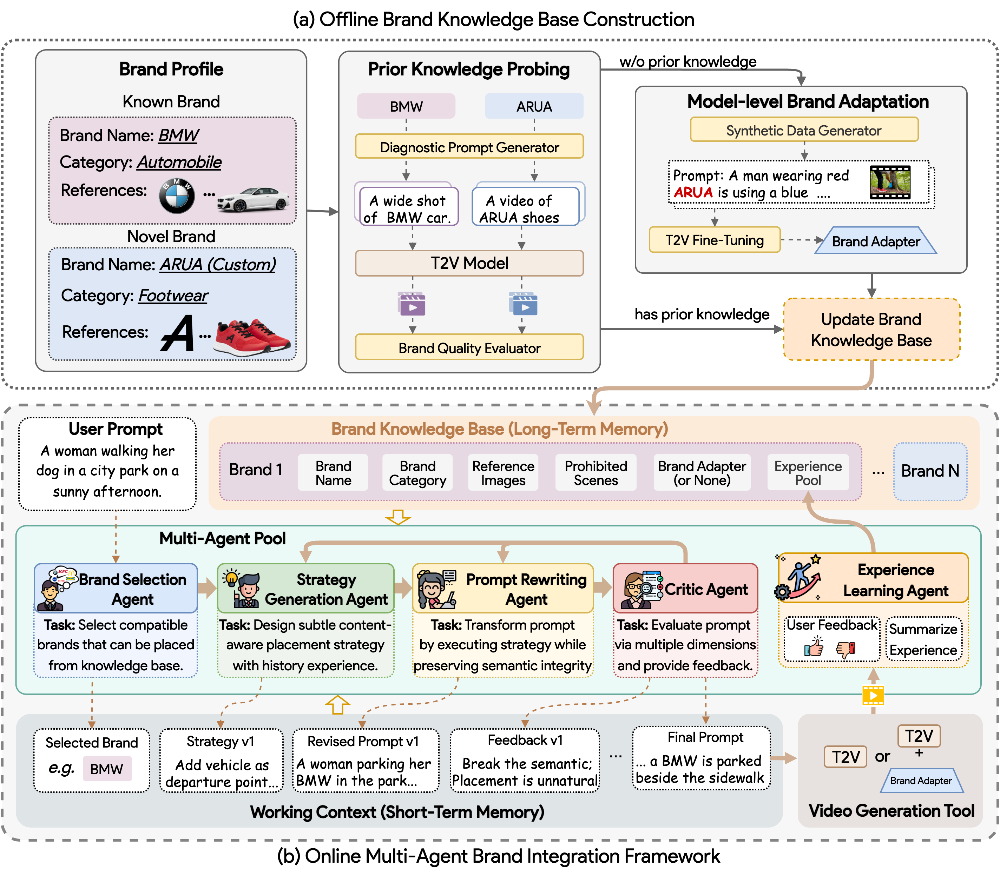

Automatically embedding advertiser brands into prompt-generated videos while preserving semantic fidelity — enabling sustainable monetization for T2V services.
1The Chinese University of Hong Kong, Shenzhen · 2Shenzhen Loop Area Institute · 3State University of New York at Buffalo · 4Harbin Institute of Technology
The rapid advancement of text-to-video (T2V) models has revolutionized content creation, yet their commercial potential remains largely untapped. We introduce, for the first time, the task of seamless brand integration in T2V: automatically embedding advertiser brands into prompt-generated videos while preserving semantic fidelity to user intent.
This task confronts three core challenges: maintaining prompt fidelity, ensuring brand recognizability, and achieving contextually natural integration. To address them, we propose BrandFusion, a novel multi-agent framework comprising two synergistic phases. In the offline phase (advertiser-facing), we construct a Brand Knowledge Base by probing model priors and adapting to novel brands via lightweight fine-tuning. In the online phase (user-facing), five agents jointly refine user prompts through iterative refinement, leveraging the shared knowledge base and real-time contextual tracking to ensure brand visibility and semantic alignment.
Experiments on 18 established and 2 custom brands across multiple state-of-the-art T2V models demonstrate that BrandFusion significantly outperforms baselines in semantic preservation, brand recognizability, and integration naturalness. Human evaluations further confirm higher user satisfaction, establishing a practical pathway for sustainable T2V monetization.
Three fundamental advances in brand-integrated T2V generation
We introduce seamless brand integration in T2V generation as a novel task, accompanied by a comprehensive evaluation protocol covering semantic fidelity, brand visibility, and integration naturalness across 270 (brand, prompt) pairs.
We propose BrandFusion, a multi-agent system with offline brand knowledge construction (prior probing + LoRA adaptation) and online collaborative prompt refinement via five specialized agents: Brand Selector, Strategy Generator, Prompt Refiner, Critic, and Experience Learner.
We conduct comprehensive experiments on 18 well-known and 2 novel brands across Veo3, Sora2, and Kling2.1, achieving state-of-the-art performance. Human evaluations confirm superior user satisfaction over all baselines.
A sustainable commercial ecosystem connecting brand owners, T2V providers, and end users

Two synergistic phases for seamless brand integration: offline knowledge construction and online multi-agent refinement

BrandFusion significantly outperforms all baselines on semantic fidelity and brand integration while maintaining video quality
We evaluate on 270 (brand, prompt) pairs spanning high, medium, and low compatibility across 18 well-known brands and 3 commercial T2V models. BrandFusion achieves comparable video quality scores while dramatically outperforming baselines on semantic preservation, brand presence rate, and integration naturalness.
| T2V Model | Method | VBench-Quality ↑ | CLIPScore ↑ | VQAScore ↑ | LLMScore ↑ | BPR ↑ | Naturalness ↑ |
|---|---|---|---|---|---|---|---|
| Veo3 | |||||||
| Direct Append | 0.8112 | 0.2671 | 0.8342 | 0.7821 | 0.7221 | 2.83 | |
| Template Rewriting | 0.8267 | 0.2842 | 0.8756 | 0.9234 | 0.8845 | 3.12 | |
| Single Rewriting | 0.8289 | 0.2956 | 0.8891 | 0.9412 | 0.8968 | 3.90 | |
| BrandFusion (Ours) | 0.8283 | 0.3274 | 0.9098 | 0.9556 | 0.9474 | 4.70 | |
| Sora2 | |||||||
| Direct Append | 0.7945 | 0.2645 | 0.8298 | 0.8756 | 0.6434 | 2.71 | |
| Template Rewriting | 0.8033 | 0.2868 | 0.8712 | 0.9187 | 0.7845 | 3.84 | |
| Single Rewriting | 0.8029 | 0.2968 | 0.8867 | 0.9368 | 0.8278 | 3.98 | |
| BrandFusion (Ours) | 0.8031 | 0.3177 | 0.9231 | 0.9875 | 0.9066 | 4.60 | |
| Kling2.1 | |||||||
| Direct Append | 0.7754 | 0.2634 | 0.8276 | 0.8742 | 0.6989 | 2.65 | |
| Template Rewriting | 0.7803 | 0.2855 | 0.8689 | 0.9165 | 0.7812 | 3.73 | |
| Single Rewriting | 0.7883 | 0.2951 | 0.8823 | 0.9351 | 0.8145 | 3.84 | |
| BrandFusion (Ours) | 0.7818 | 0.3165 | 0.9208 | 0.9853 | 0.8834 | 4.48 | |
10 participants scored videos on a 1–5 Likert scale across three dimensions
Select a brand to explore generated videos alongside original and BrandFusion-refined prompts
If you find BrandFusion useful for your research, please cite our paper